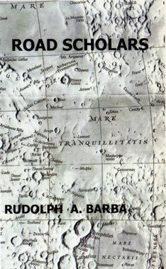
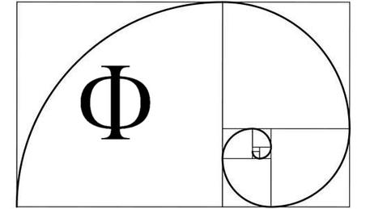

Rumors are circulating that this is Professor Dos Zetas’ first and only fictional work, written under a pseudonym. Why would he do that?
Don Pablo, from ‘Slipstream Portal Of Laundry-World’, believes he has connected the dots that explain this strange hypothesis. After reading ‘Road Scholars’ Don Pablo speculated the unlikely journey of the two characters was a fabricated ruse to embed coded information within its text. A wily format to disseminate details of a conspiracy theory to operatives spread across the globe. If one reads between the lies, rather between the lines, traces of plausibility seems to corroborate his claim.
Initially Don Pablo calculated the characters as CIA agents gone rogue, in cahoots with a deep state cabal. Shortly later he realized that such an elaborate scheme was well beyond the competence of the bumbling knuckleheads, thus focusing on Dos Zetas as a person of interest. Don Pablo revised his theory and stated, “Zetas gave these drug-addled hitchhikers a lift while driving through Mexico, they told him this crazy adventure story and he ran with it, but knew it would reflect unfavorably on him to write under his name. The genre and subject matter was not the pompous academic nonsense Zetas’ snooty followers shamelessly glorify. Lowlife creep. That’s my take anyway. Most importantly it maintains Zetas’ cover using a pseudonym. The bullshit tale is a perfect façade to share intel covertly. If you follow the drift here, it implicates Dos Zetas as the incognito master conspirator. He’s a big shot in the inner circle of the deep state cabal. The haughty ass scoundrel doesn’t fool me!”
Don Pablo’s skepticism and distrust runs deep; nonetheless the controversial content of ‘Road Scholars’ only intensifies with the passing years. A fringe fraternity called ‘Stoned Disciples of Road Scholars’ is believed to have outlined a graph plotting pivotal esoteric references that follow the same trajectory of Fibonacci’s golden ratio. One thing for sure, the Disciples are smoking some badass weed. Make what you will of it.

Here is the synopsis from the book’s back cover; it is remains unclear who actually wrote it:
LITERATURE/SLIPSTREAM/GONZO
ROAD SCHOLARS
the mapping of a higher education
In the fall of 1973 two ‘Nam vets, with a voracious appetite for wanderlust and high adventure, set out to map and explore the uncharted territory of Knowhere. Beginning in Tacoma, WA they saddle up with a quirky and implausible agenda: head south, all the way south, to the point where there is no more south, to the South Pole.
So begins the saga of Ace of Space and his point-man, King Richard The Last. Road Scholars is a modern day odyssey bursting with harrowing escapades that dwarf their own far-flung aspirations.
Their travels lead them to the enchanted garden of Mesoamerica, Costa Rica, where they swagger into the fold of the Costa Rican mafia as bodyguards for the Godfather. The dark, fast and furious lifestyle of organized crime briefly detours their expedition.
They regain their bearings and shoot an azimuth straight into the paranormal; encountering the Mayan sorceress Angelica Ynez who tutors them in the ill understood occult art of astral projection.
Their journey races on with flashflood swiftness as they come under the influence of a New Age Catholic priest with left leaning political convictions. Our unlikely counter-culture heroes choose sides between the insurgents’ struggle and the US backed despotic regimes, aka, Banana Republics. Loathing tyranny they join Salvadorian rebels battling government forces.
In the Mexican desert an Aztec mystic bestows upon them the secrets of the universe’s origins in spectacular fashion, revealing the never before seen Shrine of the Solar Arc.
Road Scholars is also a mystery with subplots weaving their way through Tarot Cards, Alchemy, Mysticism, and the Secret Order of The Cosmological Eye. Bringing that esoteric knowledge into perspective, are the rarely published extracts from the controversial dissertation of the eccentric anthropologist Professor Dos Zetas.
Yet the jet-propelled thrills and storied exploits are but a backdrop for the underlying mission of self-discovery and the unveiling of the greatest enigma of all, the purpose of life’s journey. Their unbound spirit dares where few have trekked for they are stoned philosophers searching for the Philosopher’s Stone.
The sweeping panorama of Road Scholars, from the landscape to the mindscape, barely fits between the book covers.